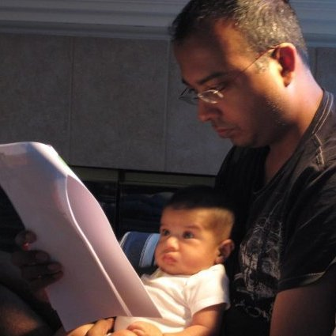

The committers

|
Jun Rao Committer, PMC member, and VP of Kafka /in/junrao @junrao |

|
Neha Narkhede Committer, and PMC member /in/nehanarkhede @nehanarkhede |

|
Joe Stein Committer, and PMC member /in/charmalloc @allthingshadoop |

|
Jay Kreps Committer, and PMC member /in/jaykreps @jaykreps |
|  |
Joel Koshy Committer, and PMC member /in/jjkoshy |

|
Prashanth Menon Committer, and PMC member /in/prasmenon |

|
Jakob Homan Apache Member, Committer, and PMC member /in/jghoman @blueboxtraveler |

|
David Arthur Committer /in/davidarthur @mumrah |

|
Sriram Subramanian Committer /in/sriram @sriramsub1 |

|
Guozhang Wang Committer, and PMC member /in/guozhang @guozhangwang |

|
Gwen Shapira Committer, and PMC member /in/gwenshapira @gwenshap |

|
Sriharsha Chintalapani Committer /in/sriharsha @d3fmacro |

|
Ewen Cheslack-Postava Committer /in/ewencp @ewencp |

|
Ismael Juma Committer, and PMC member /in/ijuma @ijuma |

|
Jason Gustafson Committer, and PMC member /in/jasongustafson |

|
Jiangjie (Becket) Qin Committer, and PMC member /in/jiangjieqin |

|
Grant Henke Committer /in/granthenke @gchenke |

|
Rajini Sivaram Committer /in/rajini-sivaram |

|
Damian Guy Committer /in/damianguy @damianguy |

|
Onur Karaman Committer /in/onurkaraman |